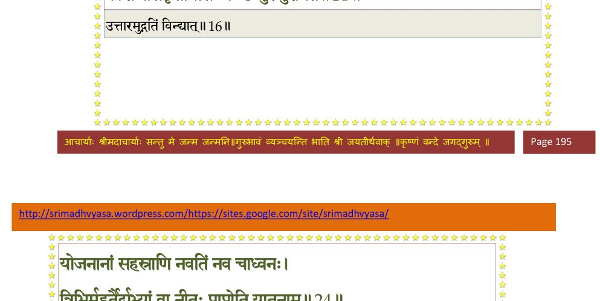
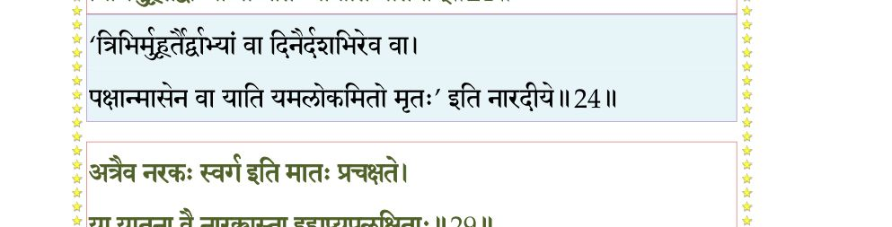
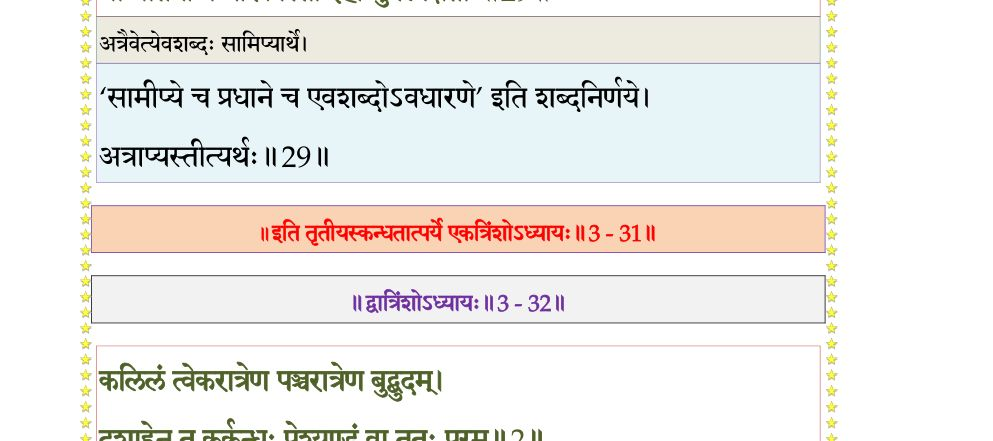

स्कन्ध 3 · अध्याय 31
श्लोक १
भगवानुवाच–
तस्यैतस्य जनो नूनं नायं वेदोरुविक्रमम् ।
काल्यमानोऽपि बलिना वायोरिव घनावलिः।। १ ।।
तस्यैतस्य जनो नूनं नायं वेदोरुविक्रमम् ।
काल्यमानोऽपि बलिना वायोरिव घनावलिः।। १ ।।
श्लोक २
यं यमर्थमुपादत्ते दुःखेन सुखहेतवे ।
तं तं धुनोति भगवान् पुमाञ्छोचति यत्कृते।। २ ।।
तं तं धुनोति भगवान् पुमाञ्छोचति यत्कृते।। २ ।।
श्लोक ३
यदध्रुवस्य देहस्य सानुबन्धस्य दुर्मतिः ।
ध्रुवाणि मन्यते मोहाद् गृहक्षेत्रवसूनि च।। ३ ।।
ध्रुवाणि मन्यते मोहाद् गृहक्षेत्रवसूनि च।। ३ ।।
श्लोक ४
जन्तुर्वै भव एतस्मिन् यां यां योनिमुपव्रजेत् ।
तस्यां तस्यां स लभते निर्वृतिं न विरज्यते।। ४ ।।
तस्यां तस्यां स लभते निर्वृतिं न विरज्यते।। ४ ।।
श्लोक ५
नरकस्थोऽपि देहं वै न पुमांस्त्यक्तुमिच्छति ।
नारक्यां निर्वृतौ सत्यां देवमायाविमोहितः।। ५ ।।
नारक्यां निर्वृतौ सत्यां देवमायाविमोहितः।। ५ ।।
श्लोक ६
आत्मजायासुतागारपशुद्रविबन्धुषु ।
निरूढमूलहृदय आत्मानं बहुमन्यते।। ६ ।।
निरूढमूलहृदय आत्मानं बहुमन्यते।। ६ ।।
श्लोक ७
सन्दह्यमानसर्वाङ्ग एषामुद्वहनाधिना ।
करोत्यविरतं मूढो दुरितानि दुराशयः।। ७ ।।
करोत्यविरतं मूढो दुरितानि दुराशयः।। ७ ।।
श्लोक ८
आक्षिप्तात्मेन्द्रियः स्त्रीणामसतीनां च मायया ।
रहोरचितसल्लापैः शिशूणां कलभाषणैः।। ८ ।।
रहोरचितसल्लापैः शिशूणां कलभाषणैः।। ८ ।।
श्लोक ९
गृहेषु कूटधर्मेषु दुःखतन्त्रेष्वतन्द्रितः ।
कुर्वन् दुःखप््रातीकारं सुखवन्मन्यते गृही।। ९ ।।
कुर्वन् दुःखप््रातीकारं सुखवन्मन्यते गृही।। ९ ।।
श्लोक १०
अर्थैरापादितैर्गुर्व्या हिंसयेतस्ततश्च तान् ।
पुष्णाति येषां पोषेण शेषभुग् यात्यधः स्वयम्।। १० ।।
पुष्णाति येषां पोषेण शेषभुग् यात्यधः स्वयम्।। १० ।।
श्लोक ११
वार्तायां लुप्यमानायामारब्धायां पुनः पुनः ।
लोभाभिभूतो निःसत्वः परार्थे कुरुते स्पृहाम्।। ११ ।।
लोभाभिभूतो निःसत्वः परार्थे कुरुते स्पृहाम्।। ११ ।।
श्लोक १२
कुटुम्बभरणाकल्पो मन्दभाग्यो वृथोद्यमः ।
श्रिया विहीनः कृपणो ध्यायञ्छ्वसति मूढधीः।। १२ ।।
श्रिया विहीनः कृपणो ध्यायञ्छ्वसति मूढधीः।। १२ ।।
श्लोक १३
एवं स्वभरणाकल्पं तत्कलत्रादयस्तदा ।
नाद्रियन्ते यथापूर्वं कीनाश इव गोजरम्।। १३ ।।
नाद्रियन्ते यथापूर्वं कीनाश इव गोजरम्।। १३ ।।
भागवततात्पर्यनिर्णय
श्लोक १४
तत्राप्यजातनिर्वेदो भ्रियमाणः स्वयंभृतैः ।
जरयोपात्तवैरूप्यो मरणाभिमुखो गृहे।। १४ ।।
जरयोपात्तवैरूप्यो मरणाभिमुखो गृहे।। १४ ।।
श्लोक १५
आस्तेऽवमत्याऽपत्याद्यैर्गृहपाल इवाहरन् ।
आमयेनाप््रादीप्ताग्निरल्पाहारोऽल्पचेष्टितः।। १५ ।।
आमयेनाप््रादीप्ताग्निरल्पाहारोऽल्पचेष्टितः।। १५ ।।
श्लोक १६
वायुनोत्क्रमतोत्तारकफसंरुद्धनासिकः ।
कासश्वासकृतायासः कण्ठो घुरुघुरायते।। १६ ।।
कासश्वासकृतायासः कण्ठो घुरुघुरायते।। १६ ।।
भागवततात्पर्यनिर्णय

श्लोक १७
शयानः परिशोचद्भिः परिवीतः स्वबन्धुभिः ।
वाच्यमानोऽपि न ब्रूते कालपाशवशं गतः।। १७ ।।
वाच्यमानोऽपि न ब्रूते कालपाशवशं गतः।। १७ ।।
श्लोक १८
एवं कुटुम्बभरणे व्यापृतात्माऽजितेन्द्रियः ।
म्रियते रुदतां स्वानामुरुवेदनयाऽस्तधीः।। १८ ।।
म्रियते रुदतां स्वानामुरुवेदनयाऽस्तधीः।। १८ ।।
श्लोक १९
यमदूतौ तदा प््र•प्तौ भीमौ सरभसेक्षणौ ।
स दृष्ट्वा त्रस्तहृदयः शकृन्मूत्रं विमुञ्चति।। १९ ।।
स दृष्ट्वा त्रस्तहृदयः शकृन्मूत्रं विमुञ्चति।। १९ ।।
श्लोक २०
यातनादेह आवृत्त्य पाशैर्बध्वा गले बलात् ।
नीयते दीर्घमध्वानं दण्ड्यं राजभटा यथा।। २० ।।
नीयते दीर्घमध्वानं दण्ड्यं राजभटा यथा।। २० ।।
श्लोक २१
तयोर्निर्भिन्नहृदयस्तर्जनैर्जातवेपथुः ।
पथि श्वभिर्भक्ष्यमाण आर्तोऽघं स्वमनुस्मरन्।। २१ ।।
पथि श्वभिर्भक्ष्यमाण आर्तोऽघं स्वमनुस्मरन्।। २१ ।।
श्लोक २२
क्षुत्तृट्परीतोऽर्कदवानलानिलैः
सन्तप्यमानः पथि तप्तवालुके ।
कृच्छ्रेण पृष्ठे कशया च ताडित-
श्चलत्यशक्तोऽपि निराश्रयोदके।। २२ ।।
सन्तप्यमानः पथि तप्तवालुके ।
कृच्छ्रेण पृष्ठे कशया च ताडित-
श्चलत्यशक्तोऽपि निराश्रयोदके।। २२ ।।
श्लोक २३
तत्र तत्र पतञ्छ्रान्तो मूर्च्छितः पुनरुत्थितः ।
तथा पापीयसा नीतस्तमसा यमसादनम्।। २३ ।।
तथा पापीयसा नीतस्तमसा यमसादनम्।। २३ ।।
श्लोक २४
योजनानां सहस्राणि नवतिर्नव चाध्वनः ।
त्रिभिर्मुहूर्तैर्द्वाभ्यां वा नीतः प््र•प्नोति यातनाम्।। २४ ।।
त्रिभिर्मुहूर्तैर्द्वाभ्यां वा नीतः प््र•प्नोति यातनाम्।। २४ ।।
भागवततात्पर्यनिर्णय

श्लोक २५
आदीपनं स्वगात्राणां वेष्टयित्वोल्मुकादिभिः ।
आत्ममांसादनं क्वापि स्वकृतं परतोऽपि वा।। २५ ।।
आत्ममांसादनं क्वापि स्वकृतं परतोऽपि वा।। २५ ।।
श्लोक २६
जीवतश्चान्त्राभ्युद्धारः श्वगृध्रैर्यमसादने ।
सर्पवृश्चिकदंशाद्यैः स्मरद्भिश्चात्मवैशसम्।। २६ ।।
सर्पवृश्चिकदंशाद्यैः स्मरद्भिश्चात्मवैशसम्।। २६ ।।
श्लोक २७
कृन्तनं चावयवशो गजादिभ्योऽभिधावनम् ।
पातनं गिरिशृृङ्गेभ्यो रोधनं बन्धगर्तयोः।। २७ ।।
पातनं गिरिशृृङ्गेभ्यो रोधनं बन्धगर्तयोः।। २७ ।।
श्लोक २८
यास्तामिस्रान्धतामिस्ररौरवाद्याश्च यातनाः ।
भुङ्क्ते नरो वा नारी वा मिथः सङ्गेन निर्मिताः।। २८ ।।
भुङ्क्ते नरो वा नारी वा मिथः सङ्गेन निर्मिताः।। २८ ।।
श्लोक २९
अत्रैव नरकः स्वर्ग इति मातः प््राचक्षते ।
या यातना वै नारक्यस्ता इहाप्युपलक्षिताः।। २९ ।।
या यातना वै नारक्यस्ता इहाप्युपलक्षिताः।। २९ ।।
भागवततात्पर्यनिर्णय

श्लोक ३०
एवं कुटुम्बं बिभ्राण उदरम्भर एव वा ।
विसृज्येहोभयं प््रोत्य भुङ्क्ते तत्फलमीदृशम्।। ३० ।।
विसृज्येहोभयं प््रोत्य भुङ्क्ते तत्फलमीदृशम्।। ३० ।।
श्लोक ३१
एकः प््रापद्यतेऽध्वानं हित्वेह स्वकलेवरम् ।
कुशलेतरपाथेयो भूतद्रोहेण यद् भृतम्।। ३१ ।।
कुशलेतरपाथेयो भूतद्रोहेण यद् भृतम्।। ३१ ।।
श्लोक ३२
दैवेनासादितं तस्य शमलं निरये पुमान् ।
भुङ्क्ते कुटुम्बपोषस्य हृतचित्त इवातुरः।। ३२ ।।
भुङ्क्ते कुटुम्बपोषस्य हृतचित्त इवातुरः।। ३२ ।।
श्लोक ३३
केवलेन ह्यधर्मेण कुटुम्बभरणोत्सुकः ।
याति जीवोऽन्धतामिस्रं चरमं तमसः पदम्।। ३३ ।।
याति जीवोऽन्धतामिस्रं चरमं तमसः पदम्।। ३३ ।।
श्लोक ३४
अधस्तान्नरलोकस्य यावतीर्यातनास्तु ताः ।
क्रमशः समनुक्रम्य पुनरत्राव्रजेच्छुचिः।। ३४ ।।
क्रमशः समनुक्रम्य पुनरत्राव्रजेच्छुचिः।। ३४ ।।
।। इति श्रीमद्भागवते तृतीयस्कन्धे एकत्रिंशोऽध्यायः ।।